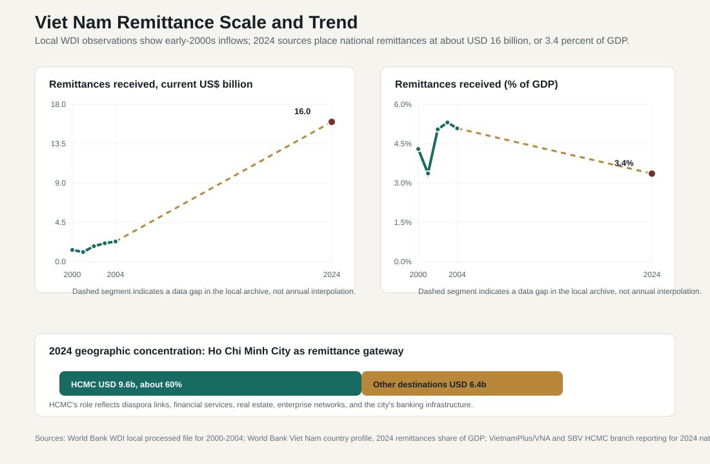

8.4 Migration, Remittances, and Inclusion
ASEAN comparative lens (2026). Vietnam should be read in ASEAN comparison as ASEAN's most prominent party-led, export-manufacturing upgrading case. Unlike the Philippines' service-remittance profile, Thailand's older industrial-tourism base, Malaysia's resource-industrial federal structure, or Indonesia's archipelagic domestic-market scale, Vietnam's comparative issue is how a socialist party-state manages very open global production networks. For this section, the regional comparison should compare demographic pressure, urbanization, migration, ethnicity, language, religion, and territorial inequality across maritime, mainland, city-state, and landlocked ASEAN settings. Local comparable indicators show: population 100.99 million (2024), rank 3 among the nine ASEAN reports in this workspace; GDP US$476.39 billion (2024), rank 4 among the nine ASEAN reports in this workspace; GDP per capita US$4,717 (2024), rank 5 among the nine ASEAN reports in this workspace; real GDP growth 7.09% (2024), rank 1 among the nine ASEAN reports in this workspace; government effectiveness 0.09 (2023), rank 6 among the nine ASEAN reports in this workspace; internet use 84.15% (2024), rank 4 among the nine ASEAN reports in this workspace. Use `sources/documents/regional/asean_comparative_lens_2026.md` together with ASEANstats, ASEAN Secretariat materials, and the country processed-indicator files before making cross-ASEAN claims.
Migration links Viet Nam's demographic transition to its development model. Workers move from rural areas to industrial zones, from smaller provinces to Ha Noi and Ho Chi Minh City, from the Mekong Delta and central regions to more dynamic labor markets, and from Viet Nam to overseas labor and diaspora networks. These movements are economically productive, but they also create administrative pressure. A state that depends on mobile labor must decide whether public services follow people or remain tied to place of registration, family origin, and formal employment status.
Domestic migration is central to export manufacturing. Industrial parks, construction, logistics, domestic services, retail, and urban informal work rely on workers who may not have stable housing, long-term local registration, formal labor contracts, or full access to social insurance. This makes migration a governance issue rather than a private household choice. Migrants need rental housing, schools for children, health access, labor protection, transport, legal aid, and channels for administrative complaints. If these services are weak, the costs of industrialization are shifted onto households and local communities.
The administrative challenge is sharpened by the distinction between economic residence and administrative belonging. Workers may produce value in one province, send money to relatives in another, and remain legally or socially tied to their home community. Local governments in destination areas must provide services to people who may not be fully counted in fiscal transfers or formal planning. Origin areas may lose young workers while retaining children, older people, and care responsibilities. Migration therefore redistributes both labor and welfare burdens.
8.4.1 Migration Channels and Administrative Problems
| Migration channel | Development contribution | Administrative problem |
|---|---|---|
| Rural-to-urban migration | Supplies labor for cities, services, construction, and manufacturing | Housing, registration, schools, health care, transport, and informal work. |
| Migration to industrial zones | Supports export production and FDI competitiveness | Worker dormitories, labor inspection, social insurance, occupational safety, and local service capacity. |
| Climate- and livelihood-related mobility | Allows households to adapt to rural stress, especially in vulnerable regions | Requires coordination between social assistance, labor placement, urban planning, and disaster policy. |
| Overseas labor and diaspora links | Generates income, skills, networks, and remittances | Recruitment regulation, worker protection abroad, reintegration, and reliable remittance channels. |
| Return migration | Brings savings, skills, and household investment back to localities | Requires credit, business support, skills recognition, and local employment options. |
8.4.2 Remittance Data: What the Project Currently Shows
Remittance statistics are available, but they require careful interpretation. The local processed WDI file in this project contains usable observations for `BX.TRF.PWKR.CD.DT` only for 2000-2004: USD 1.34 billion in 2000, USD 1.10 billion in 2001, USD 1.77 billion in 2002, USD 2.10 billion in 2003, and USD 2.31 billion in 2004. Calculated against WDI current-price GDP, these inflows were roughly 3.4-5.3 percent of GDP in the early 2000s.
The current scale is much larger. The World Bank country profile reports personal remittances received at about 3.4 percent of GDP in 2024. Using Vietnam's WDI current-price GDP for 2024, this is consistent with a national remittance scale of about USD 16 billion. Vietnamese reporting by VietnamPlus/VNA, citing Vietnamese authorities, also estimates 2024 remittances at about USD 16 billion, broadly stable relative to the record level in 2023. Ho Chi Minh City received about USD 9.6 billion, around 60 percent of the national total.

8.4.3 Scale and Trend Interpretation
The most important finding is that remittances have moved from a small but visible early-2000s inflow to a major household-finance and foreign-exchange channel. In nominal dollar terms, the available points imply an increase from USD 1-2 billion in the early 2000s to about USD 16 billion in 2024. That is a many-fold increase in scale, even though the remittance-to-GDP ratio is lower than the early-2000s peak because Vietnam's GDP has expanded rapidly.
This difference between absolute scale and GDP share matters. A lower remittance share of GDP does not mean remittances are less important for households. It means the whole economy has grown faster. A USD 16 billion inflow can still finance consumption, housing, education, health care, debt repayment, small business formation, and family resilience. It can also support the balance of payments and domestic financial liquidity.
The Ho Chi Minh City concentration is also analytically important. If HCMC receives about USD 9.6 billion, or around 60 percent of national remittances, remittances are not evenly distributed across the country. They flow through financial institutions, remittance companies, family networks, real estate markets, business investment, and urban consumption channels. HCMC's role reflects its position as Vietnam's largest economic center, a diaspora-linked city, and a gateway for finance and property investment. This creates opportunities, but it also risks reinforcing spatial inequality if remittance-financed investment is concentrated in already dynamic urban markets.
8.4.4 Household Welfare and Inclusion
Remittances support inclusion because they transfer income directly to households. They can smooth consumption, pay school fees, cover medical expenses, improve housing, finance migration costs, and help households withstand shocks. In rural or climate-vulnerable areas, remittances can become a private adaptation mechanism when local employment is weak or agricultural income is unstable.
But remittances should not be romanticized. They often reflect family separation, recruitment costs, debt-financed migration, uneven bargaining power, and vulnerability of overseas workers. A household that receives remittances may look financially resilient, but the income may depend on one worker's precarious job abroad, exchange-rate movements, host-country labor demand, or recruitment intermediaries. Administrative policy therefore has to look beyond the money received and examine the conditions under which the money is generated.
The inclusion issue is especially important for migrant households. Domestic migrants may send earnings home while lacking full access to services in destination cities. Overseas workers may support households financially while facing contract, wage, health, safety, and legal risks abroad. Families left behind may have higher income but also care burdens, child-development issues, or elderly-care responsibilities. Remittance analysis therefore belongs inside social policy, not only balance-of-payments analysis.
8.4.5 Financial System, Transfer Channels, and Consumer Protection
The scale of remittances makes payment infrastructure and consumer protection important. Formal channels through banks, remittance companies, and regulated payment systems can reduce fraud risk, improve transparency, and connect recipients to savings, insurance, credit, and investment products. Informal channels may be faster or cheaper in some circumstances, but they can weaken data quality and expose households to disputes.
The HCMC data are useful because they show that remittance companies and credit institutions are central actors. If more than half of national inflows are concentrated in one major urban-financial center, regulation of transfer companies, anti-money-laundering compliance, digital payment interoperability, consumer disclosure, and fee competition become part of social administration. The objective is less to attract remittances for their own sake than to make them safer, cheaper, more transparent, and more useful for productive household and enterprise investment.
Vietnam should also avoid treating remittances as a substitute for public policy. Remittances can finance private welfare, but they do not replace affordable housing, public health, education quality, social insurance, labor inspection, or regional development. If local governments rely on remittance-financed households to solve their own welfare problems, inequality can deepen between families with overseas links and families without them.
8.4.6 Migration, Climate Adaptation, and Regional Development
Climate risk will make migration and remittances more important. The Mekong Delta faces salinity intrusion, subsidence, water stress, livelihood pressure, and rural outmigration. Central coastal areas face storms and floods. Upland areas face land, forest, and livelihood constraints. Migration may become an adaptation strategy, but unmanaged migration can overload cities and industrial provinces.
Remittances can help households adapt by funding home repair, education, livelihood diversification, small trade, and movement to safer areas. But private remittance flows cannot solve structural climate problems. They need to be paired with public investment in water systems, transport, disaster protection, urban planning, affordable rental housing, labor placement, and social insurance portability. A household displaced by salinity or storm damage does not experience policy in sectoral boxes.
8.4.7 Policy Implications
For Viet Nam, migration is both a strength and a warning signal. It moves labor to where the economy is growing, links households to wider opportunity, and channels diaspora and overseas-worker income back into the country. The remittance scale, about USD 16 billion in 2024, confirms that migration is also a macro-financial phenomenon, not only a labor-market issue.
The policy agenda has six parts. First, update the remittance data archive so annual post-2004 observations can be tracked consistently. Second, reduce transfer costs and improve transparency in remittance services. Third, strengthen recruitment regulation and protection of Vietnamese workers abroad. Fourth, make social protection, health care, school access, and identification systems more portable for domestic migrants. Fifth, guide remittance-financed savings and investment toward productive activity rather than only land and property speculation. Sixth, connect migration policy with climate adaptation and regional development.
The broader conclusion is that inclusion in Vietnam's next development stage depends on mobility-aware administration. Migrants are economically essential but often administratively fragile. Remittances improve household capacity, but they can also reveal where public systems are not yet portable, equitable, or protective enough. A stronger migration-remittance policy would treat mobile workers and transnational families as normal parts of the national development model rather than as exceptions to a place-bound welfare system.